In their paper, Simonsohn et al. (2020) propose a third step, which represent “inference with specification curve analysis. Here, we try to answer the following question:”considering the full set of reasonable specifications jointly, how inconsistent are the results with the null hypothesis of no effect?” (p. 1212). We have been thinking a lot about implementing this “third” step in this package. Until now, we have been concluding that there is still too much uncertainty about when such joint inferences make sense (see e.g., the very recent discussion by Del Giudice & Gangestad, 2021 of differences between truly arbitrary and non-arbitrary decision and the limits of multiverse analyses: https://journals.sagepub.com/doi/full/10.1177/2515245920954925). To quote some of these concerns:
By inflating the size of the analysis space, the combinatorial explosion of unjustified specifications may, ironically, exaggerate the perceived exhaustiveness and authoritativeness of the multiverse while greatly reducing the informative fraction of the multiverse. At the same time, the size of the specification space can make it harder to inspect the results for potentially relevant findings. If unchecked, multiverse-style analyses can generate analytic “black holes”: massive analyses that swallow true effects of interest but, because of their perceived exhaustiveness and sheer size, trap whatever information is present in impenetrable displays and summaries.
We were (and still are) a bit concerned that tools for such an
inference test could lead to misuse or wrongly conducted robustness
test. Due to frequent questions, we nonetheless now integrated a
function called boot_null() in the newest development
version of specr. For details on the procedure, please have
a look at the paper. Please note that the implemented procedure refers
to the section “Inference with non-experimental data” in the paper.
Preparations
Loading packages and data
For this tutorial, we will simple use the data set included in the
package, which we can call using example_data.
glimpse(example_data)
#> Rows: 1,000
#> Columns: 15
#> $ group1 <chr> "middle", "middle", "old", "old", "old", "middle", "middle", "y…
#> $ group2 <chr> "female", "male", "female", "female", "male", "male", "male", "…
#> $ group3 <chr> "C", "B", "A", "B", "A", "A", "C", "B", "C", "A", "C", "B", "A"…
#> $ x1 <dbl> 1.16616502, 0.76481253, -2.32781072, -0.50729975, -0.99903467, …
#> $ x2 <dbl> -0.36337844, 0.03490195, -0.99786005, -0.97004472, 0.54629183, …
#> $ x3 <dbl> -0.99899919, 0.12896300, -1.11167238, -0.08670481, 0.90082978, …
#> $ x4 <dbl> -0.29290911, -0.15539508, -1.27298782, -0.97830572, 2.56842916,…
#> $ c1 <dbl> 0.73628873, -0.72031278, 0.10362937, 1.78665608, -0.24463403, 0…
#> $ c2 <dbl> 0.17137360, 0.01651493, -2.89579197, -0.13769598, 2.02092928, -…
#> $ c3 <dbl> 0.2438919, -0.7708723, -6.9505025, -0.4307226, 2.8327862, -1.32…
#> $ c4 <dbl> 1.17397012, 0.00271097, 0.11513596, 0.84856292, -1.40719578, 0.…
#> $ y1 <dbl> -0.83896230, -1.19442262, -1.63184657, 0.20794834, -1.06889092,…
#> $ y2 <dbl> -1.15339449, -1.40708441, 0.46620798, 0.17421825, 2.89071414, 2…
#> $ y3 <dbl> -0.20911315, 0.17605870, -1.07664735, -0.37805585, -0.35389962,…
#> $ y4 <dbl> -0.10135448, -0.08908509, -0.27064865, 0.73415456, -0.20267287,…Creating a custom function to extract full model
To prepare the inference under-the-null bootstrapping procedure, we
need to run the standard specification curve analysis, but make sure
that we keep the entire model object. By default, the function specr
only keeps the relevant coefficient, but by creating a customized
fitting function, we can add a colum e.g., res that
contains the full model.
Setup specifications
When setting up the specifications, we simply pass the customized
function via the argument fun1.
Run standard specification curve analysis
Next, we simply ran the standard specification curve analysis using
the core function specr.
results <- specr(specs)
summary(results)
#> Results of the specification curve analysis
#> -------------------
#> Technical details:
#>
#> Class: specr.object -- version: 1.0.1
#> Cores used: 1
#> Duration of fitting process: 0.251 sec elapsed
#> Number of specifications: 16
#>
#> Descriptive summary of the specification curve:
#>
#> median mad min max q25 q75
#> 0.14 0.44 -0.34 0.62 -0.13 0.35
#>
#> Descriptive summary of sample sizes:
#>
#> median min max
#> 1000 1000 1000
#>
#> Head of the specification results (first 6 rows):
#>
#> # A tibble: 6 × 25
#> x y model controls subsets formula estimate std.error statistic
#> <chr> <chr> <chr> <chr> <chr> <glue> <dbl> <dbl> <dbl>
#> 1 x1 y1 lm no covariates all y1 ~ x1 … 0.62 0.04 16.4
#> 2 x1 y1 lm c1 all y1 ~ x1 … 0.6 0.04 15.6
#> 3 x1 y1 lm c2 all y1 ~ x1 … 0.61 0.04 15.9
#> 4 x1 y1 lm c1 + c2 all y1 ~ x1 … 0.59 0.04 15.1
#> 5 x1 y2 lm no covariates all y2 ~ x1 … -0.33 0.04 -7.68
#> 6 x1 y2 lm c1 all y2 ~ x1 … -0.34 0.04 -7.72
#> # ℹ 16 more variables: p.value <dbl>, conf.low <dbl>, conf.high <dbl>,
#> # res <list>, fit_r.squared <dbl>, fit_adj.r.squared <dbl>, fit_sigma <dbl>,
#> # fit_statistic <dbl>, fit_p.value <dbl>, fit_df <dbl>, fit_logLik <dbl>,
#> # fit_AIC <dbl>, fit_BIC <dbl>, fit_deviance <dbl>, fit_df.residual <dbl>,
#> # fit_nobs <dbl>So far, nothing new in this tutorial.
Refit the models under-the-null
The idea behind this inference approach is that one forces the null on the data. Have a look at the following section of the Simonsohn et al. (2020) paper (p. 1213):

Run bootstrap sampling procedure
To run this procedure, we simply use the function
boot_null(), which requires the results, the specification
setup, and the number of samples that should be drawn (Simonsohn et
al. suggest n_samples = 500, here I am only demonstrating it with 10
resamples).
set.seed(42)
boot_models <- boot_null(results, specs, n_samples = 10) # better 1,000!
boot_models
#> Results of bootstrapping 'under-the-null' procedure
#> -------------------
#> Technical details:
#>
#> Class: specr.boot -- version: 1.0.1
#> Cores used: 1
#> Duration of fitting process: 20.2 sec elapsed
#> Number of bootstrapped samples: 10
#>
#> Descriptive summary of the specification curves 'under-the-null' (head):
#>
#> id median min max
#> Bootstrap01 -0.01 -0.14 0.06
#> Bootstrap02 0.00 -0.08 0.02
#> Bootstrap03 -0.02 -0.12 0.02
#> Bootstrap04 -0.03 -0.10 0.02
#> Bootstrap05 0.00 -0.05 0.09
#> Bootstrap06 0.00 -0.08 0.06
#>
#>
#> Overall median across all resamples (should be close to NULL):
#>
#> median min max
#> -0.01 -0.01 -0.01The resulting fit object includes all resamples under the null (the output shows the first 6 curves summarized).
Summarize findings
Based on these resamples, we can compute several test statistics. Simonsohn et al. propose three, but here, we implemented the first two:
Obtaining the median effect estimated across all specifications, and then testing whether this median estimated effect is more extreme than would be expected if all specifications had a true effect of zero.
The share of specifications that obtain a statistically significant effect in the predicted direction, testing whether such share is more extreme (higher) than would be expected if all specifications had an effect of zero.
These test statistics can be obtained by simply using the generic
function summary() around the fitted bootstrap object:
summary(boot_models)
#> # A tibble: 3 × 3
#> type estimate p.value
#> <chr> <chr> <chr>
#> 1 median 0.14 < .001
#> 2 share positive 8 / 16 < .001
#> 3 share negative 6 / 16 < .001As we can see here, first, the likelihood of obtaining a median of 0.14 under the assumption that all specifications had a true effect of zero is very low (p < .001). Furthermore, 8 out of 16 specifications are actually in the right direction and the likelihood of this share of specifications that obtains a statistically significant effect in the predicted direction (here: positive) to be obtained if the true effect was zero is again low (p < .001).
Plot inference curve
Simonsohn et al. also suggest that the observed specification curve can be plotted against the expected under-the-null specification curves. The expected curves are in this case based on the 10 resamples under-the-null. The curve show here the 2.5th (low), the 50th (mid) and the 97.5th percentiles of these resamples.
plot(boot_models)
References
- Simonsohn, U., Simmons, J.P. & Nelson, L.D. (2020). Specification curve analysis. Nature Human Behaviour, 4, 1208–1214. https://doi.org/10.1038/s41562-020-0912-z